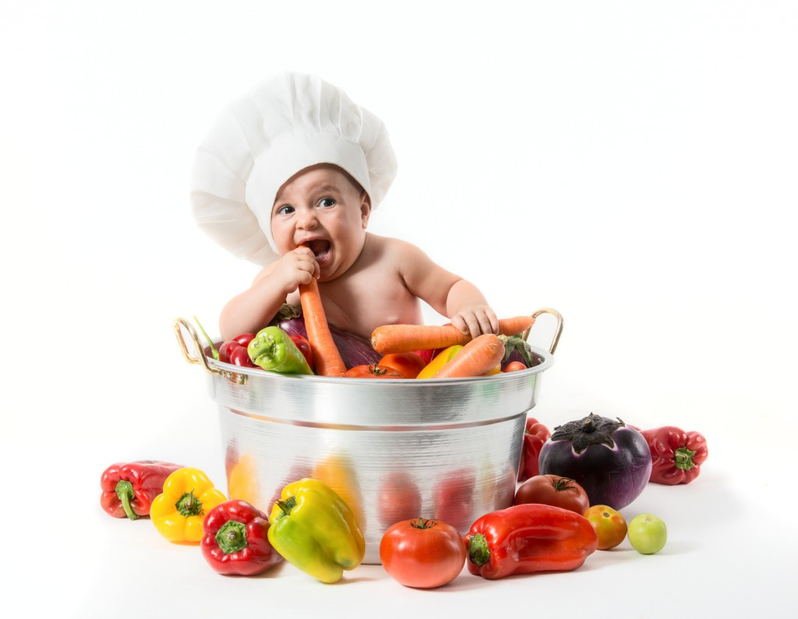
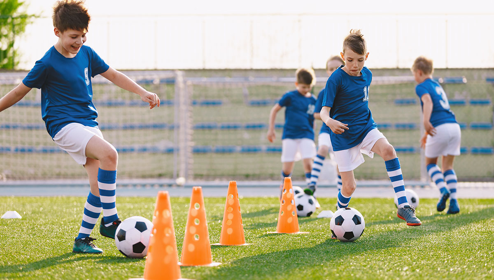
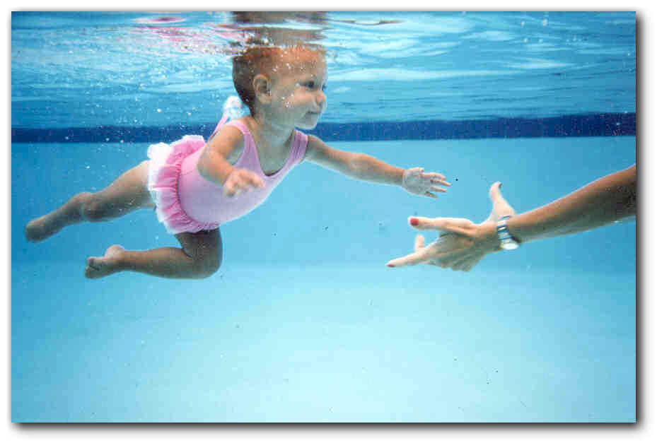
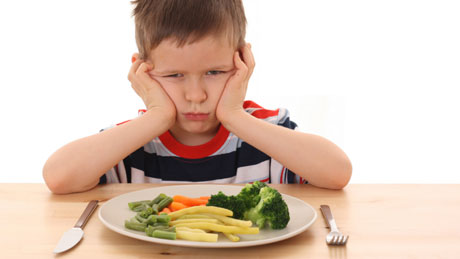

L'ALIMENTAZIONE DEI BAMBINI
L'alimentazione è l'assunzione, da parte degli organismi viventi, di sostanze semplici o complesse (proteine, grassi, carboidrati, vitamine,sali minerali e acqua) indispensabili per la costruzione delle strutture biologiche. Una sana alimentazione è fondamentale per tutelare la salute e la qualità della vita. Per vivere bene bisogna fare una corretta alimentazione e rispettare delle semplici regole. Una scorretta alimentazione si ripercuote sull'individuo con il manifestarsi di gravi disturbi fisici e morali, quali l'obesità, l'anoressia, o la bulimia. La quantità di cibo, che è l'elemento attraverso cui si soddisfa il bisogno delle nutrizione, oggi, come in passato, non è equi distribuita sul pianeta, ci sono paesi che ne hanno in abbondanza e quelli che invece soffrono la fame; ciò è dovuto a vari fattori, come il verificarsi di epidemie come la peste, e carestie. I prodotti alimentari e le tecniche di coltivazione si sono evolute nel tempo e con essi è cambiato anche la loro quantità. È nota a tutti l'importanza di una buona alimentazione per mantenere sano il nostro organismo e farlo funzionare al meglio. Se questo è valido per qualsiasi persona "normale", con una vita più o meno sedentaria, ancor di più lo è per coloro che praticano uno sport.

Torna al menu
ATTIVITA' FISICA
Per lo sportivo, infatti, l'alimentazione riveste un ruolo determinante ed è utile conoscere quali sono gli alimenti funzionali alla sua attività e in quali quantità e modalità deve assumerli per poterne trarre tutti i benefici possibili. Svolgere un'attività fisica, infatti, comporta inevitabilmente un aumento del valore energetico. Di solito chi pratica uno sport si allena in media 2-3 volte a settimana, per una durata massima di 2 ore circa. Un'attività fisica di questo tipo non comporta quasi mai un fabbisogno energetico aggiuntivo, né tanto meno richiede particolari aggiustamenti della razione alimentare Lo sportivo può e deve mangiare abitualmente di tutto. Le quantità saranno proporzionali al tipo di attività fisica che svolge. Inutile dire che quando l'attività fisica rallenta o cessa del tutto, è bene che l'ex? atleta riduca proporzionalmente i suoi consumi alimentari, adeguandoli alle nuove abitudini. Tutti gli sportivi dovrebbero imparare che i cibi "speciali", ossia gli integratori e quant'altro la pubblicità propone in materia, non aggiungono nulla di veramente utile alla "normale" alimentazione. Una dieta variata, composta dai normali cibi scelti fra i diversi gruppi alimentari, fornisce un'adeguata quantità di vitamine e minerali. È vero che mangiando male qualsiasi atleta peggiora il suo rendimento ma non esistono alimenti "magici" capaci di migliorare le prestazioni fisiche oltre quello che possiamo attenderci dalle nostre caratteristiche personali e soprattutto dall'allenamento. Lo sportivo non può eccedere nel consumo di carboidrati poiché superare la percentuale del 55 60% di zuccheri con l'apporto calorico complessivo comporta disturbi digestivi (meteorismo, costipazione o diarrea, dolori addominali), riduzione dell'appetito e possibile carenza dell'apporto di calcio. Per quanto riguarda le vitamine. Sono sufficienti le normali quantità di vitamine ricavabili da una dieta adeguata e variata. Il fabbisogno vitaminico dello sportivo è praticamente uguale al fabbisogno di chi non pratica sport. Carenze vitaminiche negli atleti non si riscontrano praticamente mai e assumere elevate quantità di vitamine significa sprecare denaro (è un modo costoso per aumentare il contenuto di vitamine nelle urine), rischiando fenomeni di accumulo di vitamine liposolubili (vitamine A, D, E, K). Per ciò che riguarda gli integratori minerali, molti sportivi ne fanno uso, ma è preferibile cercare negli alimenti e non negli integratori ciò di cui l'organismo ha bisogno.
 
Torna al menu
CORRETTA ALIMENTAZIONE
Il nostro organismo funziona come una macchina: ha bisogno della “giusta” benzina. Il cibo è la nostra benzina e per questo l’alimentazione svolge un ruolo cruciale,influisce maggiormente sulla salute dei bambini e degli adulti, fornendo tutte le sostanze e le energie necessarie al nostro corpo per svolgere in modo efficiente ed efficace tutte le sue molteplici funzioni. Una corretta alimentazione consente al corpo umano di crescere e svilupparsi in condizioni ottimali durante l’infanzia e la pubertà, contribuisce al mantenimento del benessere psico-fisico in età adulta e rappresenta un prezioso investimento per giungere alla vecchiaia nelle migliori condizioni di salute. Ecco che allora è importantissimo imparare sin da giovanissimi ad impostare la propria dieta (da intendersi come insieme di alimenti assunti abitualmente e non come “dieta dimagrante”) in modo che risponda alle seguenti caratteristiche: sana, equilibrata e variata, che preveda cioè l’introduzione di tutti i gruppi alimentari nelle giuste proporzioni rispettando la stagionalità e i prodotti locali. Ciò presuppone sapere cosa magiare, come scegliere e combinare gli alimenti, come distribuire i pasti nella giornata. Al contrario, infatti, le cattive abitudini alimentari apprese da piccoli rischiano di essere un fardello per la salute ,perché possono predisporre a diverse malattie, come ipertensione, arteriosclerosi, obesità, diabete e alcuni tumori, da cui invece una sana alimentazione ci protegge. Il latte è il primo alimento che il neonato assume alla nascita e che sarà sufficiente a fornirgli tutti i nutrienti specifici per la sua crescita fino al sesto mese di vita. Successivamente, con l’avvio dell’alimentazione complementare a richiesta, come più propriamente viene definito l’autosvezzamento, il bambino viene a contatto con gli alimenti che trova a tavola, per cui è importante che i genitori abbiano dei comportamenti alimentari salutari e rispettino le regole di una buona nutrizione, evitando cibi dannosi e dando preferenza ad alimenti non processati e a filiera corta.

Il ruolo dell’alimentazione nella crescita dei bambini
La nutrizione è un determinante principale della crescita e del corretto sviluppo. Influisce direttamente sull’espressione dei geni che controllano crescita e metabolismo. Ormoni, fattori di crescita e nutrienti interagiscono tra loro in un delicato equilibrio. La malnutrizione (intesa come cattivo modo di alimentarsi) è oggi la causa più comune nel ritardo di crescita. Infine, esistono sempre maggiori evidenze scientifiche che avvalorano le ricerche iniziate dal prof. David J.P. Barker (1980, Università di Southampton) secondo il quale uno stato di salute e di nutrizione inadeguato della donna in gravidanza, del neonato e dell’infante, produce gravi effetti sulla struttura e funzione di organi e tessuti chiave del nostro organismo, in grado di influenzare pesantemente la salute dell’adulto e lo sviluppo di malattie croniche importanti.
L’educazione alimentare
In un quadro del genere si inserisce il progetto di educazione alimentare in età scolare che proponiamo. Come occasione di incontro e discussione delle abitudini dietetiche dei bambini e delle famiglie (che sono intimamente connessi gli uni con gli altri). Le abitudini alimentari odierne, influenzate in buona parte, e soprattutto in età scolare, dai mass media ci hanno portato verso una concezione distorta di “alimentazione salutare” che talvolta è molto distante da ciò che si intende con il termine salute. Scopo di questo lavoro è quello di promuovere degli incontri nei quali, assieme alle famiglie, si possa diffondere un concetto di alimentazione sana e adatta alle necessità dei bambini in età scolare, a correggere gli eventuali errori alimentari e a prevenire future malattie croniche (ipertensione, diabete tipo 2, malattie cardiovascolari, cancro, ecc.).